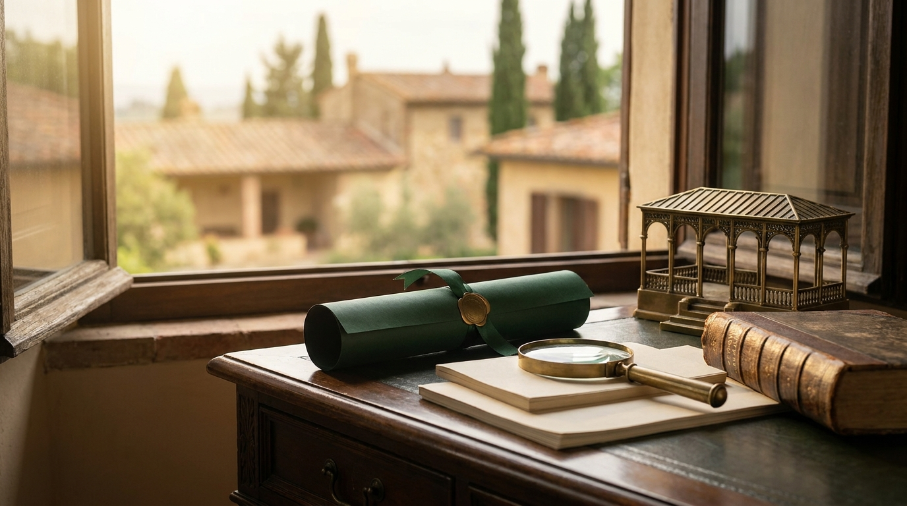

Verande in condominio: quando la delibera unanime vale come contratto
Una delibera assembleare votata all'unanimità può autorizzare interventi su beni di proprietà privata, come una veranda. Lo conferma la Corte d'Appello di Catanzaro con la sentenza n. 388/2026: il consenso totale dei condomini trasforma la decisione in un vero e proprio contratto, sanando i limiti di competenza dell'assemblea. Un principio con ricadute concrete per chi vive in condominio.

Il caso
La controversia nasce dall'installazione di verande in un edificio condominiale. La proprietaria del piano sottostante contestava interventi che, a suo dire, l'assemblea non aveva il potere di autorizzare, trattandosi di opere che incidono su beni di proprietà esclusiva e non sulle parti comuni.
La Corte d'Appello di Catanzaro, sez. I civile, con sentenza n. 388/2026 del 17 marzo 2026, ha confermato la legittimità della delibera, riconoscendole valore contrattuale in ragione dell'unanimità con cui era stata approvata.
Inquadramento normativo
Il punto di partenza è la distinzione tra le competenze tipiche dell'assemblea e i diritti dei singoli sui beni di proprietà esclusiva. L'assemblea condominiale, ai sensi degli artt. 1135 e 1136 del Codice civile, delibera sulla gestione delle parti comuni. Non ha invece il potere di disporre dei beni privati dei singoli condomini né di imporre vincoli su di essi.
Quando però una delibera viene approvata all'unanimità, muta la sua natura. La giurisprudenza consolidata distingue tra delibera in senso proprio — espressione della volontà della maggioranza che vincola la minoranza dissenziente — e accordo contrattuale, che presuppone il consenso di tutti i partecipanti. Nel secondo caso non si applicano i limiti di competenza dell'assemblea: ciò che tutti i condomini hanno accettato vincola tutti, perché ognuno ha prestato il proprio consenso individuale.
La Corte calabrese si colloca su questa linea: l'unanimità sana il vizio di incompetenza, perché la decisione non opera più come atto collegiale a maggioranza ma come negozio plurilaterale, riconducibile alla disciplina del contratto (art. 1321 c.c.).
Implicazioni pratiche
La pronuncia ha effetti rilevanti per chi vive in condominio. Una delibera unanime che autorizzi opere su beni privati — come l'installazione di verande, la chiusura di balconi o la modifica di facciate — non è impugnabile sostenendo che l'assemblea avesse ecceduto i propri poteri. Il vincolo nasce dal consenso, non dalla competenza dell'organo.
Questo significa che il condomino il quale abbia votato a favore non potrà successivamente disconoscere la decisione lamentando l'incompetenza assembleare. Il suo voto è una manifestazione di volontà contrattuale, che lo impegna.
Vale anche il rovescio: se manca anche un solo consenso, la delibera che incide su diritti privati torna a essere viziata e impugnabile. L'unanimità non è quindi un dettaglio formale, ma il presupposto stesso della validità.
Un ulteriore profilo da non trascurare riguarda le opere edilizie in sé: l'eventuale legittimità interna al condominio non sostituisce i titoli abilitativi richiesti dalla normativa urbanistica. Una veranda autorizzata dall'assemblea resta abusiva se priva del permesso amministrativo necessario.
Cosa fare in concreto
- Verificate la modalità di approvazione. Prima di contestare una delibera su beni privati, accertate se sia stata adottata all'unanimità o a maggioranza: la differenza è decisiva sull'esito di un'eventuale impugnazione.
- Documentate il consenso. Se in assemblea si decide su opere che toccano proprietà esclusive, pretendete che il verbale registri con precisione i voti e la presenza di tutti i condomini.
- Distinguete il piano condominiale da quello urbanistico. Non confondete l'autorizzazione dell'assemblea con il titolo edilizio: verificate sempre la conformità delle opere alla normativa amministrativa.
- Valutate i termini di impugnazione. Le delibere annullabili vanno impugnate entro trenta giorni (art. 1137 c.c.). Consigliamo di esaminare tempestivamente verbale e modalità di voto per non perdere il diritto di azione.
- Inquadrate il vincolo prima di votare. Chi esprime un voto favorevole su opere di terzi assume un impegno di natura contrattuale: valutatene le conseguenze prima di prestare il consenso.
---
*Contributo informativo a cura di Tamburro & Partners - Avv. Giuseppe Tamburro. Non costituisce parere legale.*
Ogni condominio ha una storia a sé.
Se gestisci un'amministrazione e vuoi un confronto su una specifica questione condominiale, scrivi allo studio. Ti rispondiamo entro un giorno lavorativo.